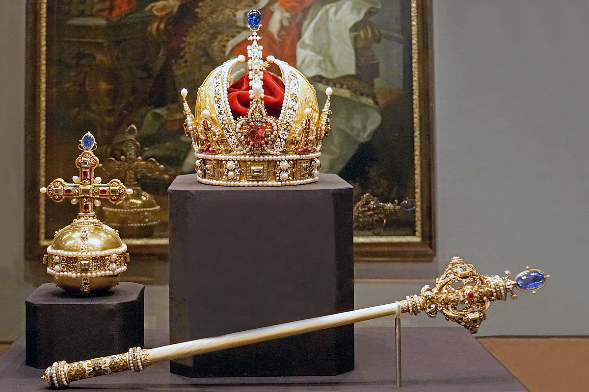
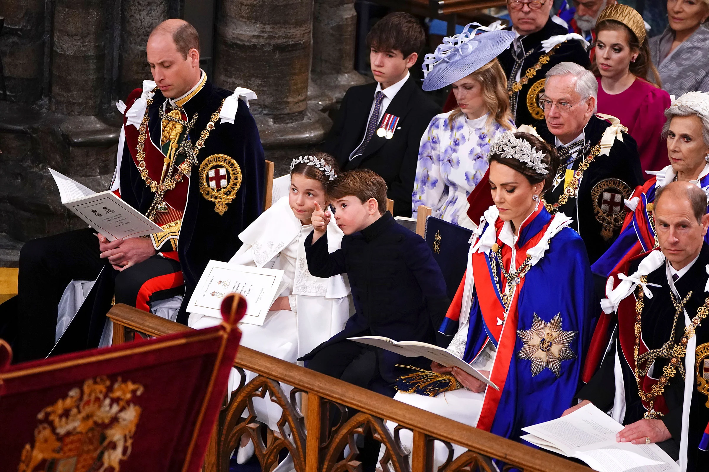
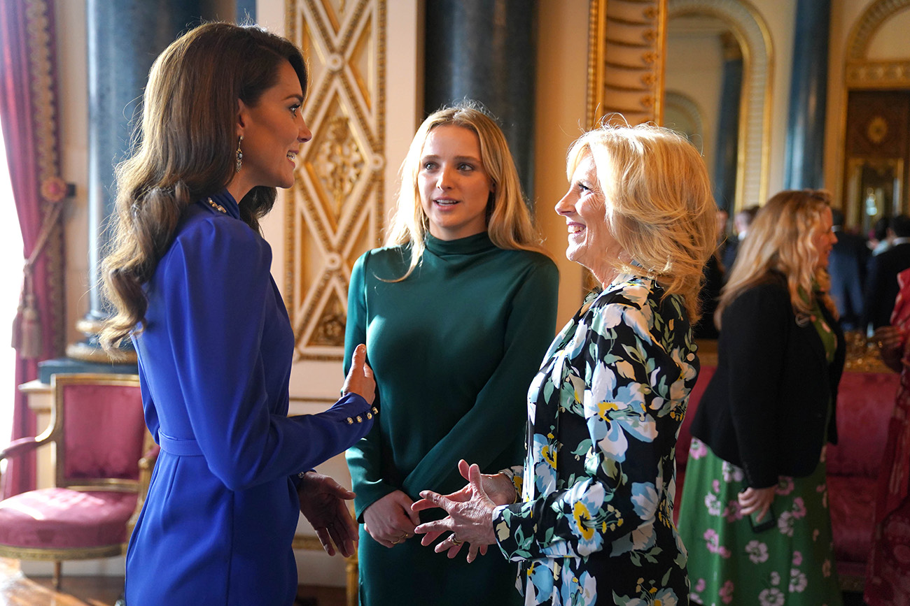

About the Coronation
King Charles III will be crowned on June 12th, 2023 in Westminster Abbey. The ceremony will be steeped in tradition and will be attended by members of the royal family, heads of state, and other dignitaries.
The Crown Jewels
The Crown Jewels are a collection of ceremonial objects used by the monarchs of England at their coronations and other state occasions. They include the crowns, scepters, orbs, swords, and robes used during the coronation ceremony of King Charles III.
The Coronation Ceremony
The coronation ceremony is a traditional event that takes place in Westminster Abbey, London. During the ceremony, the monarch takes an oath to uphold the laws and customs of the realm, and is anointed with holy oil by the Archbishop of Canterbury.
The Coronation Banquet
After the coronation ceremony, a grand banquet is held in honor of the new monarch. The banquet is attended by members of the royal family, heads of state, and other dignitaries. The banquet typically features a variety of dishes, including roast beef, lamb, and fish, as well as wines and other beverages.
Schedule of Events
- 9:00am - The King and Queen arrive at Westminster Abbey
- 10:00am - The ceremony begins
- 11:30am - The newly crowned King and Queen exit Westminster Abbey and proceed to Buckingham Palace
- 12:00pm - The King and Queen appear on the balcony at Buckingham Palace
Location
The coronation ceremony will take place at Westminster Abbey, which is located in central London. The Abbey is easily accessible by public transportation and there will be additional transportation services available on the day of the coronation.
Contact Us
If you have any questions or would like additional information about the coronation, please contact us at:
- Phone: 555-555-5555
- Email: coronation@royal.uk